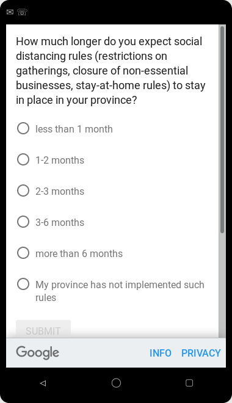
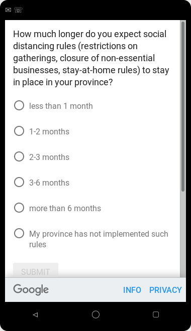
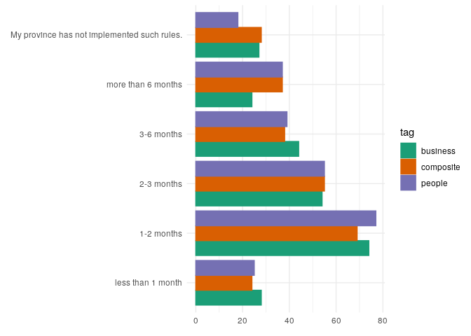

Uncertainty in times of COVID-19: Choosing whether to ask 1 or 2 questions
Fabian Lange, Lars Vilhuber
2020-04-28
Purpose
We fielded three questions regarding uncertainty in the April 2020 COVID-19 situation in Canada. Goal is to select either a two-question survey, using different questions for employment and consumer behavior, or a composite question that encompasses both. The question is whether answers between the two-question version differ between questions. The composite question was asked as a control.
Sources
We pre-registered the decision based on preliminary data collected after the first day of fielding the question (on 20200421). The decision about choice of the question, as well as preliminary descriptive results, are based on test data collected over the entire test time period, with a target n of 250 per question. We collected data from 2020-04-12 to 2020-04-17 across Canada, achieving a total n=753.
The data was manually downloaded from the Google Consumer Survey site on 20200412, and saved, using the naming convention tag-YYYYMMDD-HHMM.xlsx. Data used for both the original design and the full test time period are available in this archive.
Preliminary data files
Test data files
Fielded questions
We fielded three questions in the test sample:
- How much longer do you expect social distancing rules (restrictions on gatherings, stay-at-home rules) to stay in place in your province?
- How much longer do you expect the closure of non-essential businesses to stay in place in your province?
- How much longer do you expect social distancing rules (restrictions on gatherings, closure of non-essential businesses, stay-at-home rules) to stay in place in your province?
For each question, we collected responses on a Likert scale with text: “less than 1 month”, “1-2 months”, “2-3 months”, “3-6 months”, “more than 6 months”, and a response equivalent to “does not apply” (“My province has not implemented such rules.”).

 

First results
Total observation by tag / question
| tag | date | count |
|---|---|---|
| business | 20200421 | 251 |
| composite | 20200421 | 251 |
| people | 20200421 | 251 |
Responses to Question 1
| Q1 | count | percent |
|---|---|---|
| less than 1 month | 25 | 9.96 |
| 1-2 months | 77 | 30.68 |
| 2-3 months | 55 | 21.91 |
| 3-6 months | 39 | 15.54 |
| more than 6 months | 37 | 14.74 |
| My province has not implemented such rules. | 18 | 7.17 |
Responses to Question 2
| Q1 | count | percent |
|---|---|---|
| less than 1 month | 28 | 11.16 |
| 1-2 months | 74 | 29.48 |
| 2-3 months | 54 | 21.51 |
| 3-6 months | 44 | 17.53 |
| more than 6 months | 24 | 9.56 |
| My province has not implemented such rules. | 27 | 10.76 |
Responses to Question 3
| Q1 | count | percent |
|---|---|---|
| less than 1 month | 24 | 9.56 |
| 1-2 months | 69 | 27.49 |
| 2-3 months | 55 | 21.91 |
| 3-6 months | 38 | 15.14 |
| more than 6 months | 37 | 14.74 |
| My province has not implemented such rules. | 28 | 11.16 |
Do the different questions yield different responses?
Visually

Kolmogorov-Smirnov Test
##
## Two-sample Kolmogorov-Smirnov test
##
## data: hist.business and hist.people
## D = 0.16667, p-value = 1
## alternative hypothesis: two-sidedIn the Kolmogorov-Smirnov test, the entire (cumulative) distribution is tested for equality. The hypothesis of equality of distributions is rejected when the test statistic \(D\) is larger than \(c(\alpha) \sqrt{\frac{n+m}{n*m}}\) where \(n\) and \(m\) are the sample sizes.
For the full test data, \(n=\) 251 and \(m=\) 251, the square root evaluates to 0.0892644. The test statistic \(D=\) 0.1666667, with a p-value of 1. Based on the KS test, we thus reject the hypothesis of equality of distributions.
Single-dimensional test
Alternatively, we can compute a \(z\)-test for the proportion responding to Q1 with “1-2 months”, with the remaining fractions collapsed to an “other” category. For the test sample, these numbers are 29.4820717 percent for the business version, and 30.6772908 percent for the people version. The \(\chi^2\) statistic has a value of 0.0378861 and a p-value of 0.8456721. Based on the \(z\)-test, we cannot reject the hypothesis of equality of responses to Q1. For the (non-pre-registered) comparison of the fraction responding with “more than 6 months”, the \(\chi^2\) statistic has a value of 2.6871863 and a p-value of 0.1011583.
The test has power of 0.05 for the sample size n=251 and effect size 9.56 at \(\alpha =\) 0.05.
Fisher’s exact test
##
## Fisher's Exact Test for Count Data with simulated p-value (based on
## 10000 replicates)
##
## data: hist.business and hist.people
## p-value = 1
## alternative hypothesis: two.sidedWe can also use Fisher’s exact test to assess whether the two distributions are different. The null hypothesis is that the rows and columns of the two histograms are independent (i.e., the two distributions are different). Fisher’s test when applied to the test sample gives a p-value of 1, so the null that the two distributions are different should be rejected.
\(\chi^2\) test
##
## Pearson's Chi-squared test with simulated p-value (based on 10000
## replicates)
##
## data: hist.business and hist.people
## X-squared = 30, df = NA, p-value = 1Finally, a \(\chi^2\) test of independence of distributions yields a test statistic of 30 and a p-value of 1, not rejecting the null that the two histograms are different.
Decision Criterion
We will use one composite question if the two variants (business and people) are not statistically different in our test sample, according to the majority of tests.
Results
Based on the observed data from the test data collected between 2020-04-12 and 2020-04-17 across Canada, we chose the two-question version.